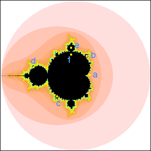
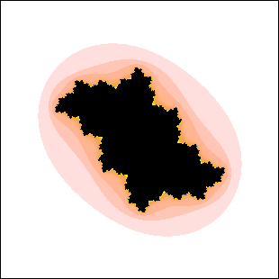
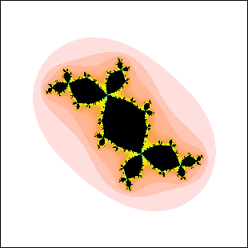
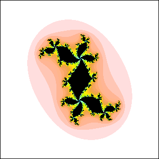
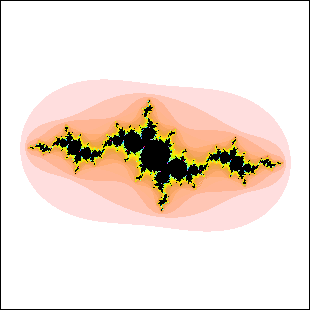
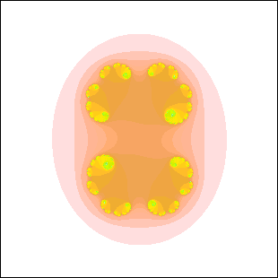
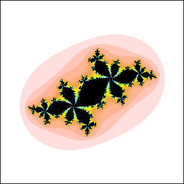

| 14. (a) is a point outside the Mandelbrot set, so the Julia set is a Cantor set.
Only 5 is a Cantor set. |
| (b) lies in the 4-cycle disc of the upper principal series, so the Julia set
must have four lobes meeting at each branch point. Only 3 satisfies this condition. |
| (c) lies in the largest disc between the 2-cycle disc and the 3-cycle disc of the
lower principal series. Consequently, (c) is a 5-cycl disc. The Julia set must
have five lobes meeting at each branch point. Only 6 satisfies this condition. |
| (d) lies in a 6-cycle disc attached to the 2-cycle disc. The Julia set has branch
points where two lobes meet, and branch points where three lobes meet. This is
picture 4. |
| (e) lies in the 3-cycle disc of the upper principal series, so the Julia set has
three lobes meeting at each branch point. This is picture 2. |
| (f) lies in the main cardioid, corresponding to a fixed point, so the Julia
set has no branch points. This is picture 1. |
|  |
| 1 |
 |
2 |
 |
| 3 |
 |
4 |
 |
| 5 |
 |
6 |
 |
|